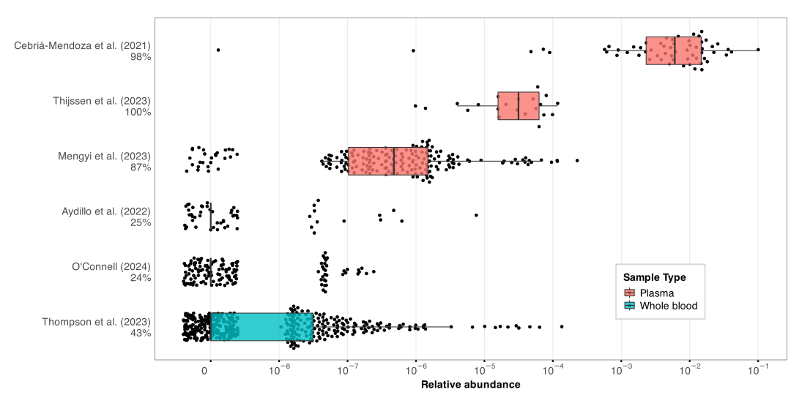
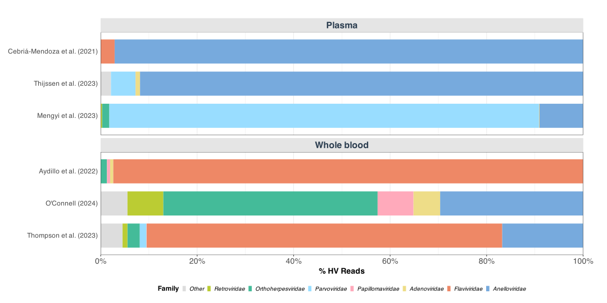
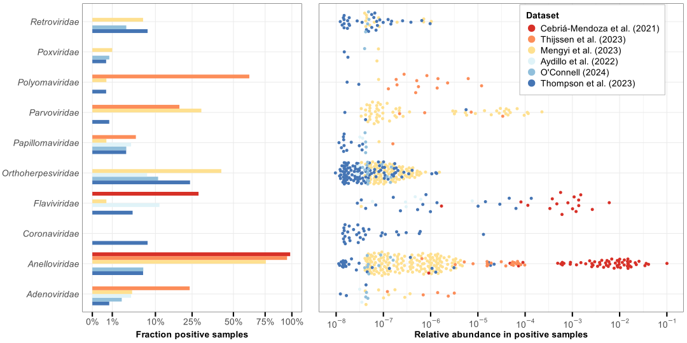
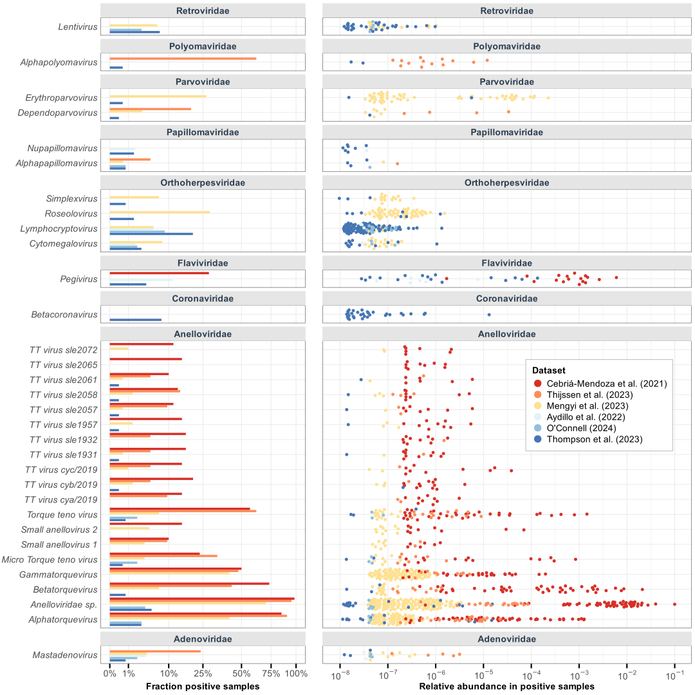

[1] "There were a total of 9853718 putatitve HV reads. After removing the 6342742 unclassified reads by Kraken2, we get a total of 3510976 putative HV reads that we conduct the rest of the analysis on."1 Load packages & settings
2 Remove low-quality sample, contaminants, and spike-ins
3 Kingdom-level composition
Table 2: Kingdom-level taxonomic composition showing percentage of reads assigned to each kingdom after random subsampling to 1 million read pairs per sample. (Rounding from paper has not been applied here.)
4 Human-infecting viruses



5 Appendix
